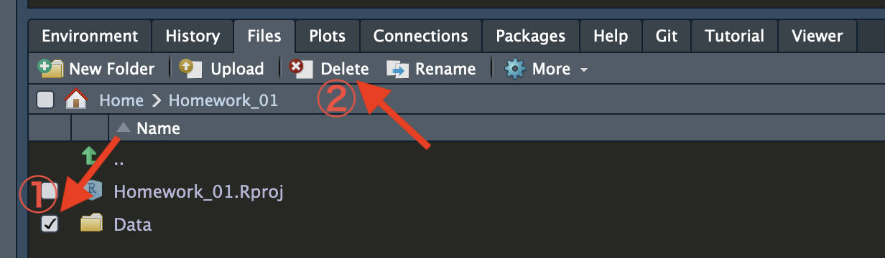
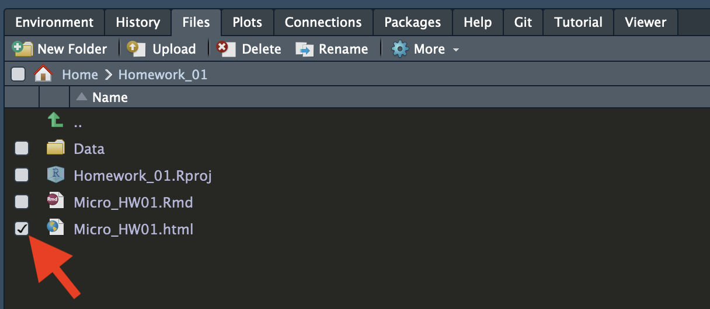

ファイル管理
フォルダー/ファイルの管理はJupyterHub内でも、RStudio内でもできるが、ここではRStudio側で管理する方法を紹介する。RStudioを起動し、作業するプロジェクトを開き、Filesペインを確認しよう。RStudioを経由したフォルダー/ファイルの管理は全てFilesペイン上で行われる。
Filesペインはどこ?
宋が推奨する設定の場合、Filesペインは画面の右下領域にある。Environment、History、Files、Plotsなど様々なタブがあるが、FilesをクリックするとFilesペインが表示される。RStudioではこれらの領域のことをペイン（pane）と呼ぶ。
1 フォルダーの管理
講義、または課題ごとのプロジェクトを作ったら、JupyterHubにプロジェクトのフォルダーが生成される。各プロジェクトごとにRスクリプト、Markdownファイル、出力物（図、文書など）が管理できるが、プロジェクト内のファイルが多くなる可能性もある。この場合、プロジェクト・フォルダー内に更に下位フォルダーを作成し、ファイルを管理した方が望ましい。
1.1 フォルダーの作成
手順1: 現在、Filesペインで表示されているフォルダーがプロジェクトの最上位フォルダーであることを確認する。「Home > プロジェクト名」と表示されていれば問題ない。
手順2: New Folderをクリックする。
手順3: 作成するフォルダーの名前を入力する。ここではデータなどを集めておくDataという名のフォルダーを作成する。

手順4: 正しくフォルダーが作成されているかを確認する。

フォルダー名の付け方
フォルダー名にはローマ字、数字のみを使おう。スペースもなるべく使わず、空白を入れたい場合はスペースの代わりにアンダースコア（_）を使おう。
フォルダー in フォルダー
フォルダー内に更にフォルダーを作成することもできる。一つのフォルダー内にファイルが多すぎる場合、更にフォルダー分けして管理した方が効率的だろう。
1.2 フォルダーの削除
フォルダーの削除は慎重に!
フォルダーを削除するとフォルダー内のファイルも全て削除される。削除する前には慎重にフォルダー内のファイルを確認しておくこと。
手順1: 削除するフォルダーの左にチェックを付け、Deleteをクリックする。

手順2: Yesをクリックする。
2 ファイルの管理
分析に使用するデータセットを自分のPCにダウンロードしてもそのままNIIオンライン分析システムで使うことはできない。NIIオンライン分析システムで使用するためには、ファイルをアップロードする必要がある。これはデータだけでなく、本講義の課題用ファイルについても同様である。
2.1 ファイルのアップロード
手順1: ファイルをアップロードしたいフォルダーへ移動する。
- 下位フォルダーへの移動: フォルダー名をクリックする。
- 上位フォルダーへの移動: 「..」をクリックするか、パスが表示されているバーで移動先をクリックする。
手順2: ファイルのアップロード先が正しいかを確認し、Uploadをクリックする。
- 以下の例は
Homework_01プロジェクト・フォルダー内のDataフォルダーがアップロード先である。
手順3: File to upload:でアップロードしたいファイルを選択する。

複数のファイルをアップロードしたい場合
RStudio上でファイルは一度の一つしかアップロードできない。複数のファイルを同時にアップロードしたい場合は、この作業を繰り返すか、JupyterHubのホーム画面でアップロードする必要がある。
手順4: アップロードするファイルをダブルクリックする。
- 以下では
Prev_Vote.csvというファイルをアップロードする例である。

手順5: OKをクリックする。

手順6: 正しくファイルがアップロードされているかを確認する。

2.2 ファイルのダウンロード
作成した図表をLaTex/Microsoft Word/Powerpoint/Pages/Keynoteなどで使うためには、その図表を自分のPCにダウンロードする必要がある。同様に、課題の出力物をLMSに提出するためにも、出力物を一旦自分のPCにダウンロードしてから提出する必要がある。
複数ファイルのダウンロード
アップロードは一度ごとに一つのファイルしかアップロードできないが、ダウンロードは複数のファイルを同時にダウンロードできる。ただし、個別のファイルがダウンロードされるのではなく、一つのファイルととして圧縮（zip形式）されてからダウンロードされる。ダウンロード後はファイルを解凍すること。
手順1: ダウンロードするファイル名の左にチェックを付ける。
- 以下では
Micro_HW01.htmlというファイルをダウンロードする例である。

手順2: More > Export…をクリックする。

手順3: Downloadをクリックする。

課題の出力物は提出する前に必ず確認を!!
LMSで課題を提出するためには出力物を提出する必要があるが、提出する前にダウンロードしたファイルを必ず確認しよう。間違ったファイルを提出した場合でも提出期限内なら差し替え可能だが、期限が過ぎた場合、理由を問わず差し替えは認めない。また、間違ったファイルが提出されたことを宋が個別に知らせることもないため注意しよう。
2.3 ファイルの削除
フォルダーの削除と同じ手順で削除できる。